80旧版洞见scene公版✓ 判官过审烟灰才是火焰美的真正来源
🎬 你可能想不到，飘在伦敦空气里的那些煤灰烟尘，其实是火焰美丽的秘密。
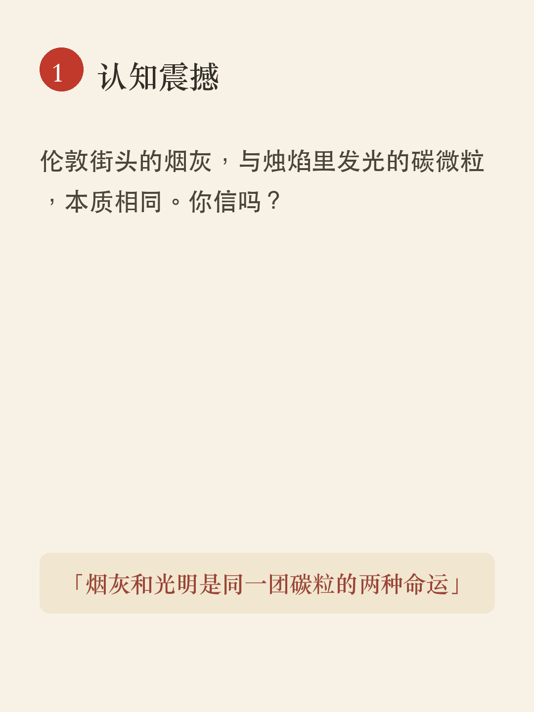
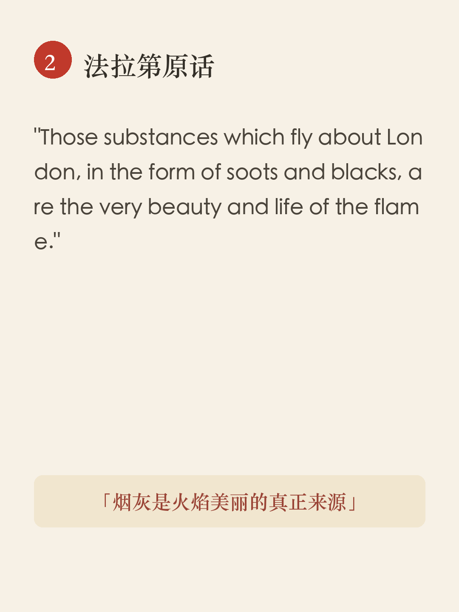
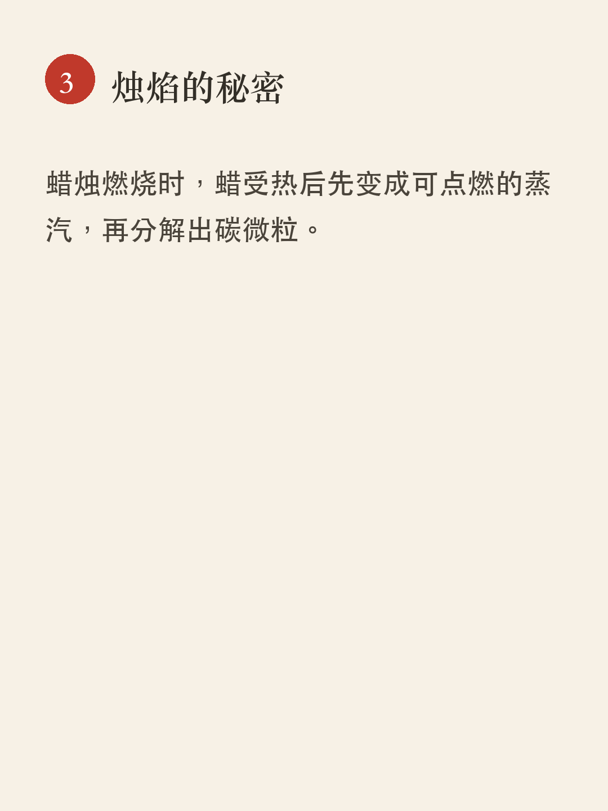
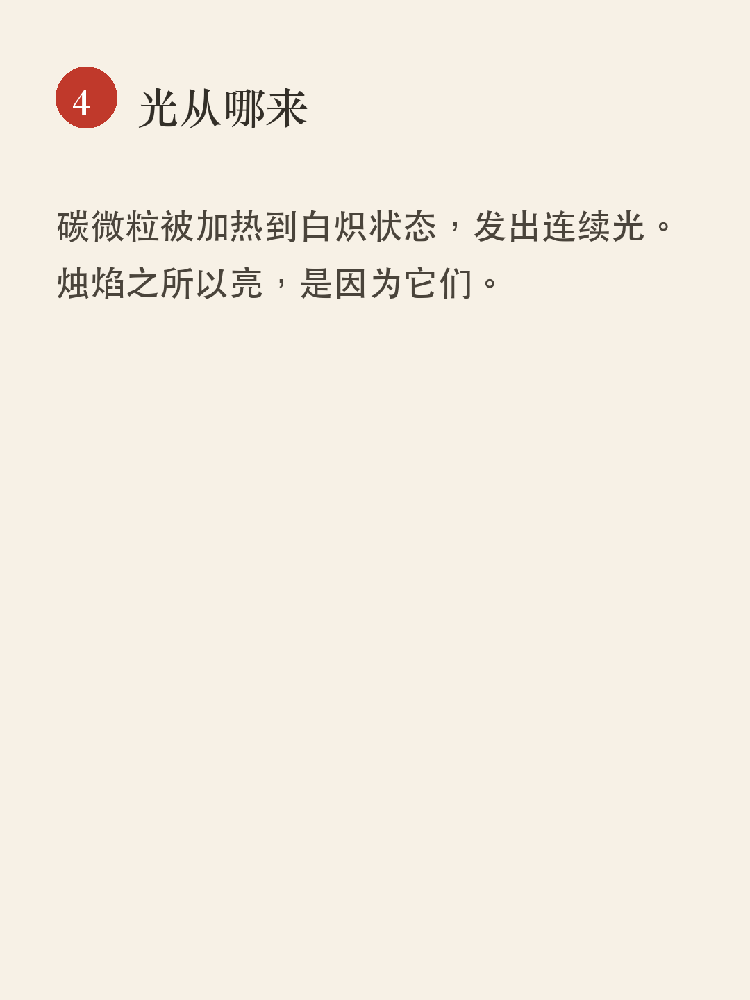
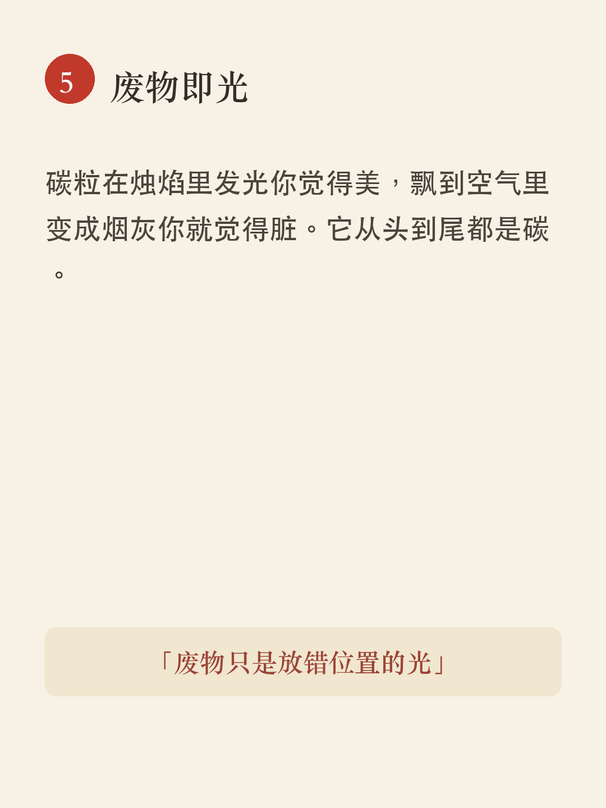
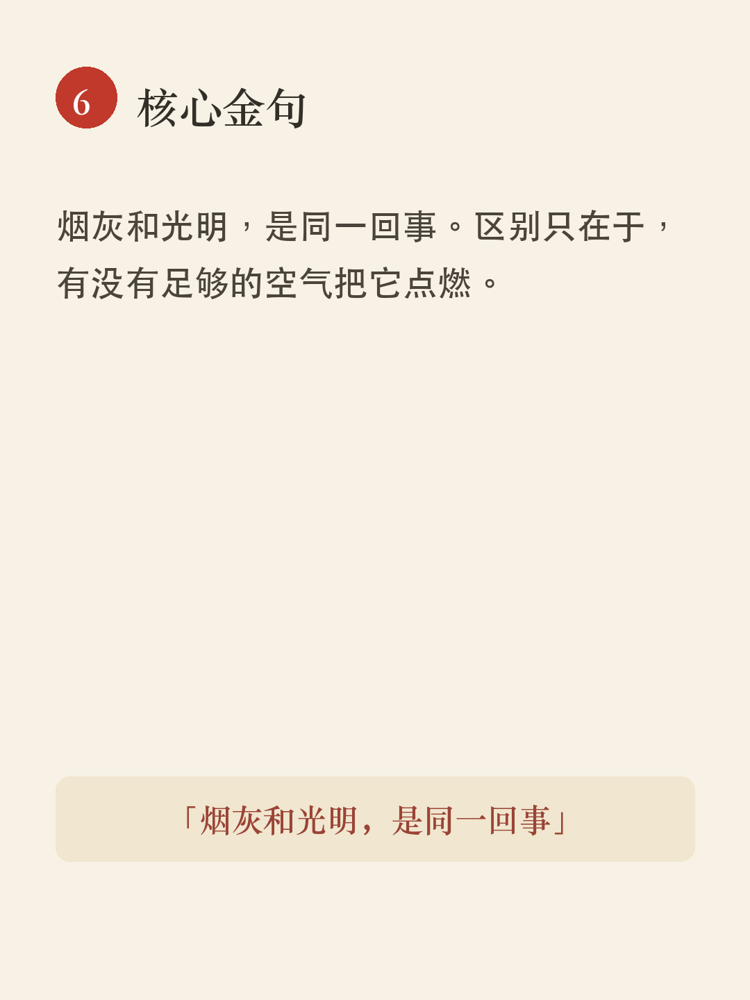
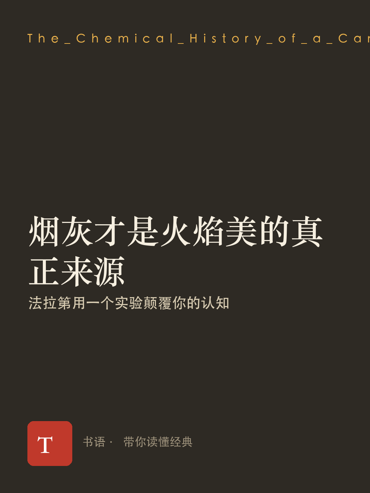
📄 配文·钩子（不剧透）
你可能想不到，伦敦街头的烟灰和烛焰里发光的碳微粒，本质上竟是同一种东西。法拉第用一根玻璃管插进烛焰，证明了碳粒被加热到白炽状态才是光亮的真正来源。这不只是化学知识——它是对"废物"的重新定义。那些被人嫌弃的烟灰，可能只是放错位置的光。法拉第用物理事实告诉你：烟灰和光明，区别只在于有没有足够的空气把它点燃。口播稿全文
你可能想不到，你每天在伦敦街头皱眉捂鼻的那些烟灰——那些你以为是污染、是你呼吸系统敌人的东西——但法拉第告诉你：它们与让烛焰发出明亮光芒的碳微粒本质相同，只是所处条件不同。
法拉第在第2讲里直接说了一句话，我建议你把这句话记下来，因为它会彻底改变你看东西的方式。他说："You would hardly think that all those substances which fly about London, in the form of soots and blacks, are the very beauty and life of the flame."
翻译过来就是：那些飘在伦敦空气中的烟灰和黑色物质，实际上是火焰美丽的真正来源。
这听起来是不是很矛盾？烟灰怎么可能是光明的来源？但法拉第用实验把这个逻辑讲得清清楚楚。
蜡烛燃烧时，蜡受热后变成可以点燃的蒸汽。他在实验中用玻璃管插进烛焰中间，引出可燃蒸气并在管口点燃，证明了这一点。
但这只是故事的一半。法拉第接着解释：当空气供应不足的时候，这些本该完全燃烧的碳粒，就没办法彻底烧掉，它们会被喷出来，变成你看到的黑烟和烟灰。
关键来了——在烛焰的燃料富集区，碳微粒被生成后会被加热到白炽状态。白炽是什么意思？就是被加热到发出光来。烛焰之所以那么亮，主要是因为这些碳微粒被加热到白炽而发出连续光——它们随后才在外焰与氧反应为二氧化碳。
所以法拉第的意思是：烟灰和光明，是同一团碳粒的两种命运。空气极不足会让碳微粒以黑烟逸出，空气预混过多则抑制碳微粒形成并降低亮度。
这个洞见最厉害的地方不在于化学，而在于它对"废物"的重新定义。从法拉第的解释我们可以引申一个比喻：那些飘在伦敦空气中的烟灰，被人嫌弃、被认为是污染，但它们与让火焰明亮的碳微粒本质相同，只是所处条件不同。
我们太容易把一个东西的某个阶段定义为"废物"了。碳粒在火焰里烧着的时候你觉得它美，它飘到空气里变成烟灰你就觉得它脏。但它从头到尾都是碳，从来没有变过。
这个认知翻转过来，你会发现生活中很多"废物"可能只是放错了位置的光。法拉第用一根蜡烛、一根玻璃管，把这个道理讲得比任何心灵鸡汤都有力——因为他不是在鼓励你，他是在告诉你一个物理事实。
烟灰和光明，是同一回事。区别只在于，有没有足够的空气把它点燃。
80旧版映照thread公版✓ 判官过审一个读过法拉第的孩子，比亚里士多德更懂火
🎬 法拉第说：一个读完这些讲座的孩子，对火的理解就超过了亚里士多德。
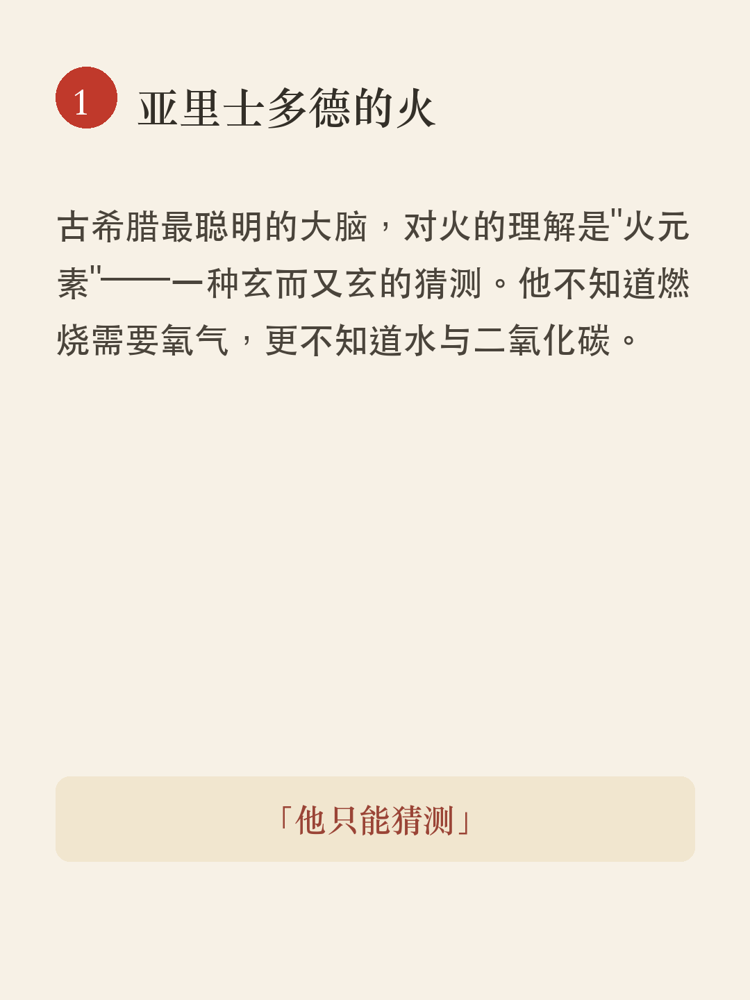
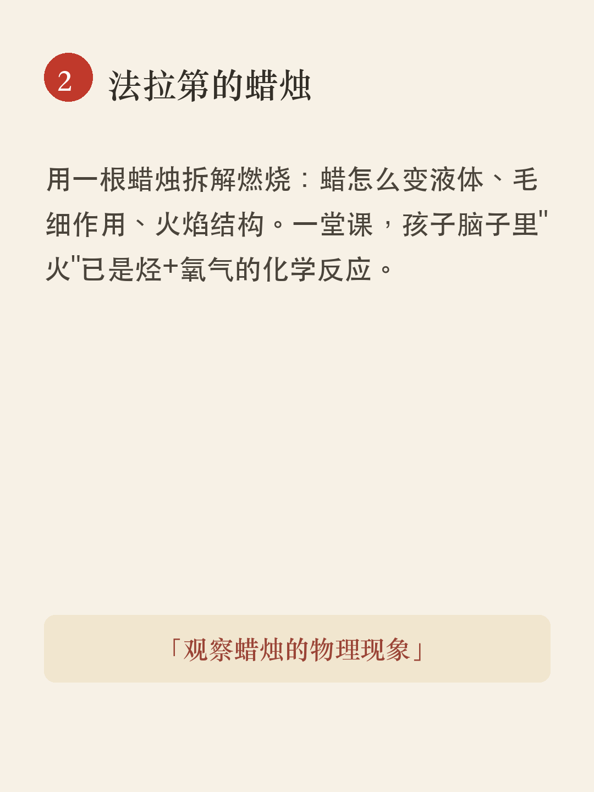
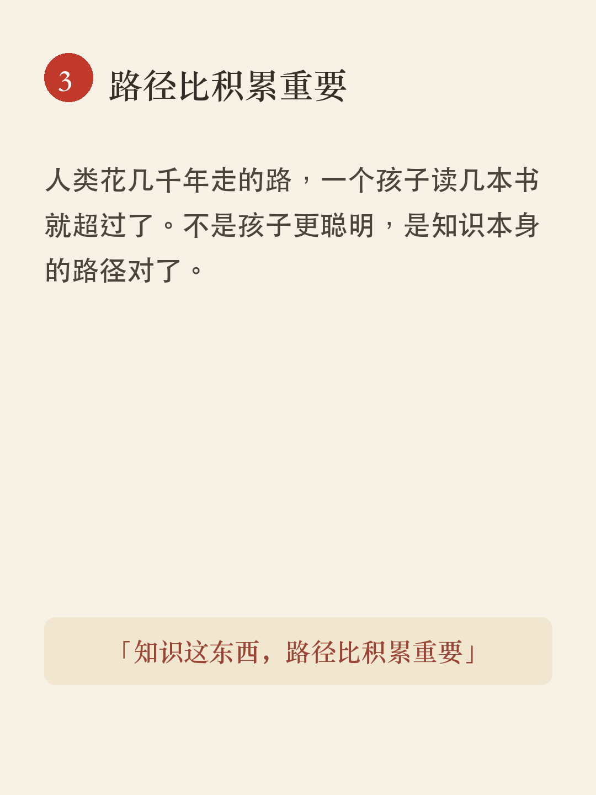
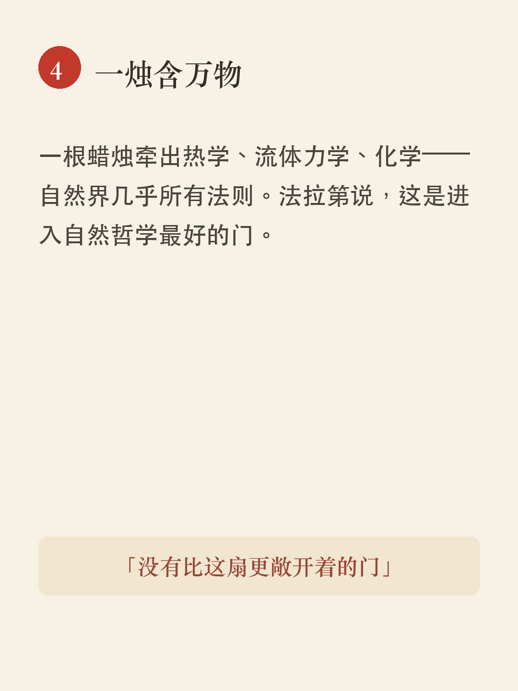
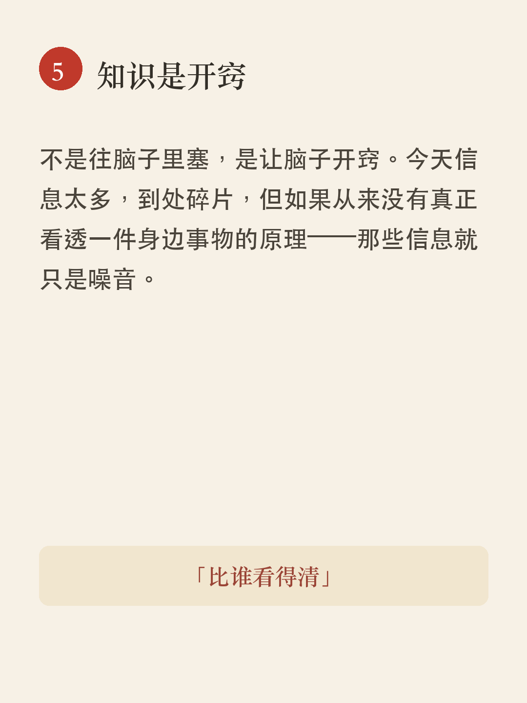
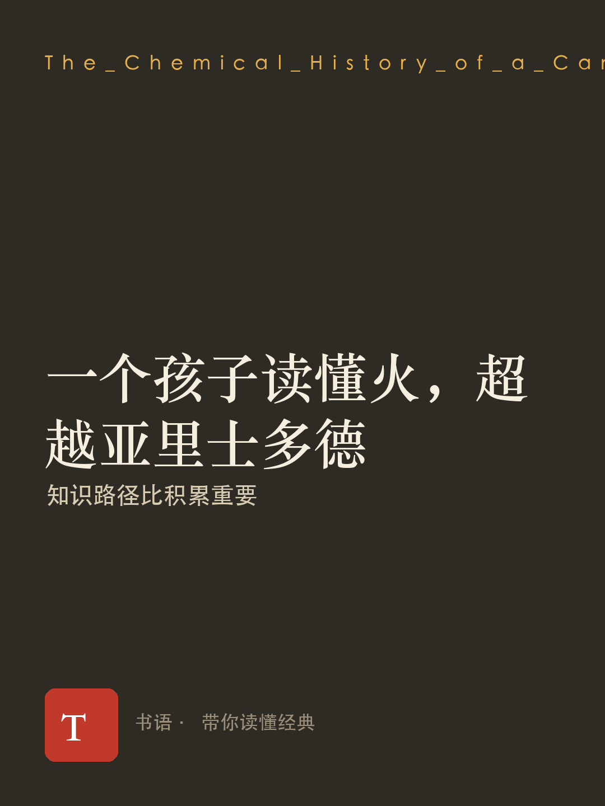
📄 配文·钩子（不剧透）
读了几千年，人类才搞懂火是怎么烧的。
一个十二岁的孩子，读完法拉第的蜡烛讲座，对火的理解就超过了亚里士多德。
不是因为他知道得更多，是因为他理解得更透。
知识这东西，从来不是比谁装得多，是比谁看得清。
信息爆炸的时代，最稀缺的不是知识量，而是一个能让你真正开窍的路径。一根蜡烛就够了。口播稿全文
一个小孩，读完几堂关于蜡烛的课，对火的理解就超过了亚里士多德。
这不是夸张，是序言作者克鲁克斯写的。
1860年代在伦敦皇家研究所面向青少年观众的讲座。序言里有这么一段话。大意是，人类摸索了几千年，才搞懂火的真相。而一个读过这套讲座的孩子，在这个课题上，已经走在了亚里士多德前面。
你可能会想，一个十二岁的孩子懂什么？蜡烛——停电时你去找的那根东西——怎么可能跟古希腊最聪明的脑袋相提并论？
但法拉第讲的是真的。他在这六场讲座里，带着孩子们一步步拆解一根燃烧的蜡烛：火焰怎么烧、蜡怎么变成液体、毛细作用怎么把液体吸上去、燃烧的产物是什么。你以为他只是在讲蜡烛？不，他是用一根蜡烛把燃烧的核心化学原理（如燃烧需氧、生成水与二氧化碳、烃类的反应机理、火焰结构与亮度等）系统讲清。
等孩子把这六讲读下来，他脑子里"火"的概念已经不是亚里士多德那套玄而又玄的"火元素"了。他知道蜡烛等烃类燃料的燃烧是烃（含碳氢）与氧气的化学反应，主要生成水与二氧化碳，知道燃烧需要氧气。这些原理足以解释绝大多数日常燃烧现象。
亚里士多德不知道这些。两千多年前没有这些仪器、没有这套方法。所以他只能猜测。
这是一件很反直觉的事——人类花了几千年才走过的路，一个孩子读几本书就能超过。但这不是说这个孩子比亚里士多德聪明，而是说——知识这东西，有时候路径比积累重要。
法拉第在第一讲里说：没有比这扇更好的门，没有比这扇更敞开着的门，能让你进入自然哲学的研究——那就是观察蜡烛的物理现象。他说的是真的。一根蜡烛，把自然界几乎所有的法则都牵进来了。热学、流体力学、化学——全在里面。
但真正打动我的不是这个。是法拉第的逻辑：他没有让孩子去读那些艰深的典籍，他是让孩子去看、去想、去理解一根蜡烛。知识不是往脑子里塞，是让脑子开窍。
这让我想到今天我们面临的处境。信息太多了，到处都是"你该知道的"。但读了很多东西，如果从来没有像法拉第教孩子观察蜡烛那样，真正看透一件身边事物的原理，那些信息就只是碎片。
一个读过这些讲座的孩子，超过了亚里士多德。不是因为他知道得更多。是因为他理解得更透。
知识这东西，从来不是比谁装得多，是比谁看得清。
80旧版冷知识scene公版✓ 判官过审我们能像接煤气一样把蜡烛接出来
🎬 法拉第真的把蜡烛'接'成了煤气管道。
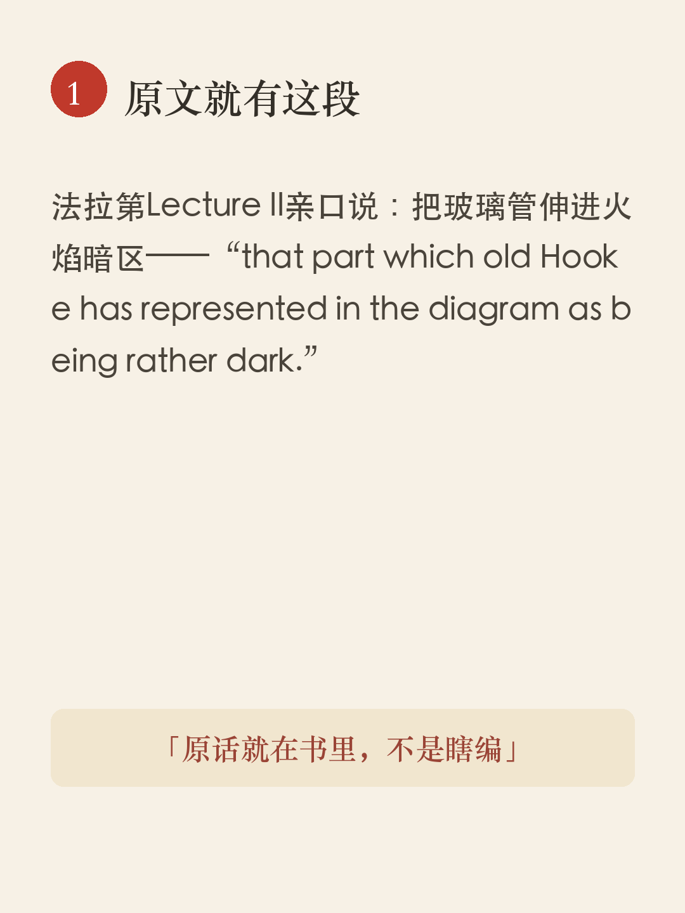
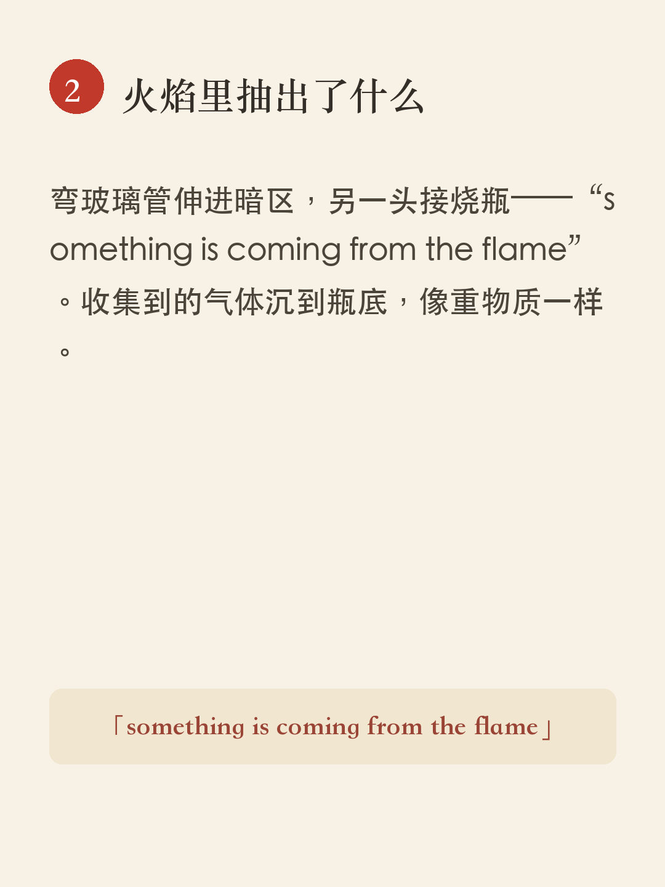
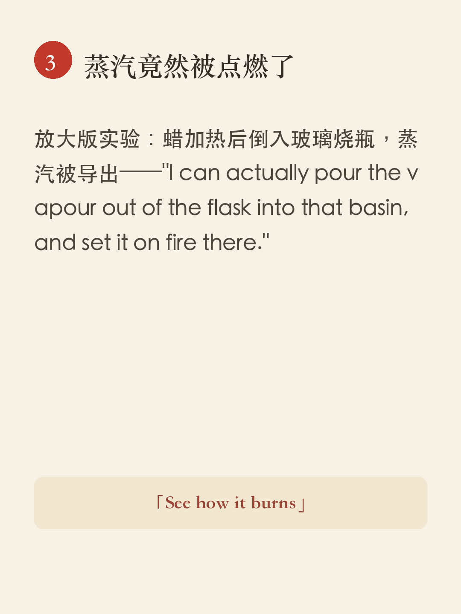
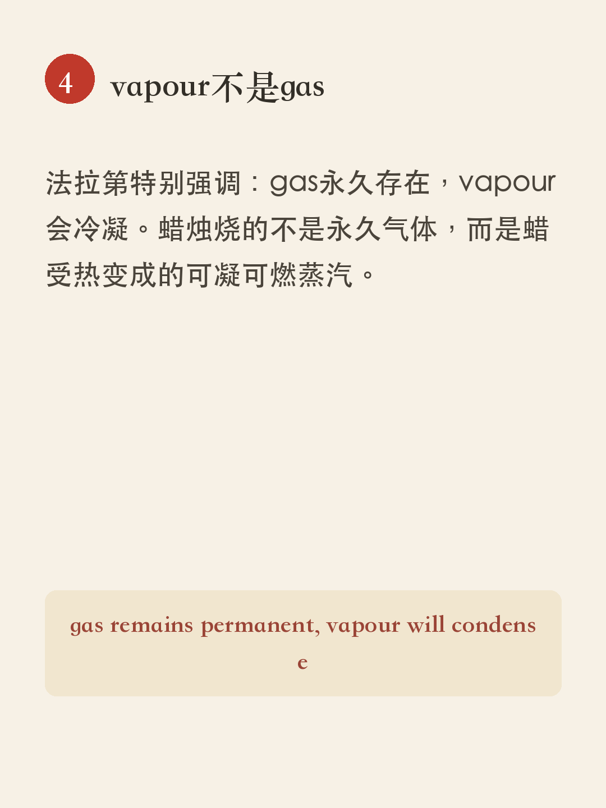
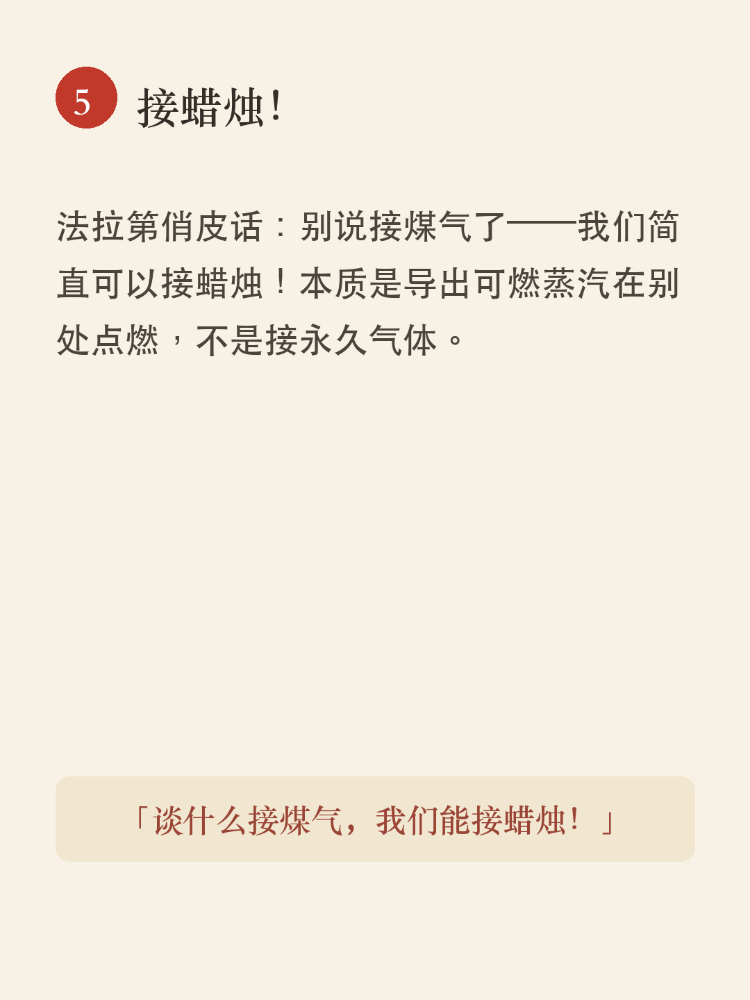
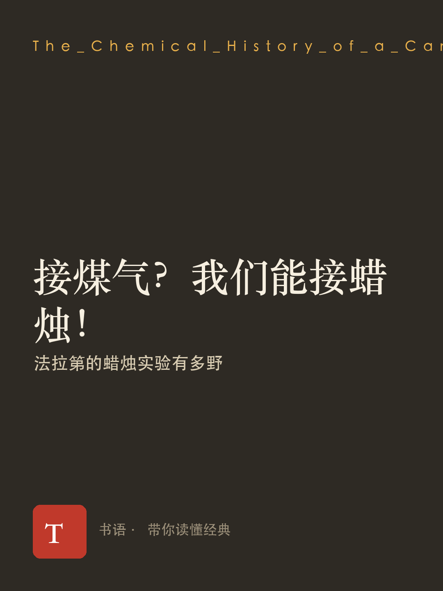
📄 配文·钩子（不剧透）
法拉第这期实验太野了！
你还在说"接煤气"？人家法拉第100多年前就说了：我们可以像接煤气一样接蜡烛！
原文里他用玻璃管伸进蜡烛火焰暗区，抽出可燃蒸汽收集到烧瓶里——蒸汽沉到底部像重物质，然后点燃。放大版更绝：把蜡蒸汽从烧瓶倒进盆里再点着。
但法拉第专门强调了一个区别：vapour（可凝蒸汽）≠ gas（永久气体）。蜡烛烧的是蜡受热变成的蒸汽，煤气是永久气体。
这个知识点，小本本记起来！📝口播稿全文
你给的那个"点"——用玻璃管从蜡烛火焰暗区导出可燃蒸汽再点燃——**原文里就有这段，而且描述得很清楚**。
法拉第在Lecture II里原话是这样："Here is a candle: I am about to put the end of this glass tube into the middle of the flame—into that part which old Hooke has represented in the diagram as being rather dark." 然后他用弯玻璃管伸进火焰暗区，把中间的东西抽出来——"something is coming from the flame, out at the other end of the tube"，收集到烧瓶里，"behaves very differently from what it does in the open air. It not only escapes from the end of the tube, but falls down to the bottom of the flask like a heavy substance."
接着法拉第还做了放大版实验：把蜡加热装进玻璃烧瓶，"I can actually pour the vapour out of the flask into that basin, and set it on fire there." 最后把从蜡烛火焰里抽出来的那份蒸汽也点燃了——"See how it burns."
法拉第紧跟着这个实验还说了句俏皮话，大意是："谈什么接煤气——我们简直可以接蜡烛！"
不过法拉第在正文里用的是"vapour"而非"gas"，他专门强调了这个区别："You must learn the difference between a gas and a vapour: a gas remains permanent, a vapour is something that will condense." 也就是说，蜡烛燃烧的是蜡在热作用下成为可凝的**可燃蒸汽**，而非煤气那样的永久气体。
这才是"接蜡烛"的真正原理——不是接出永久气体，而是把蜡受热变成的可燃蒸汽导出来，在别处点燃。
76旧版映照scene公版✓ 判官过审别问天赋，问你有没有追问为什么
🎬 法拉第说：每当你看到新现象，第一反应应该是——为什么？
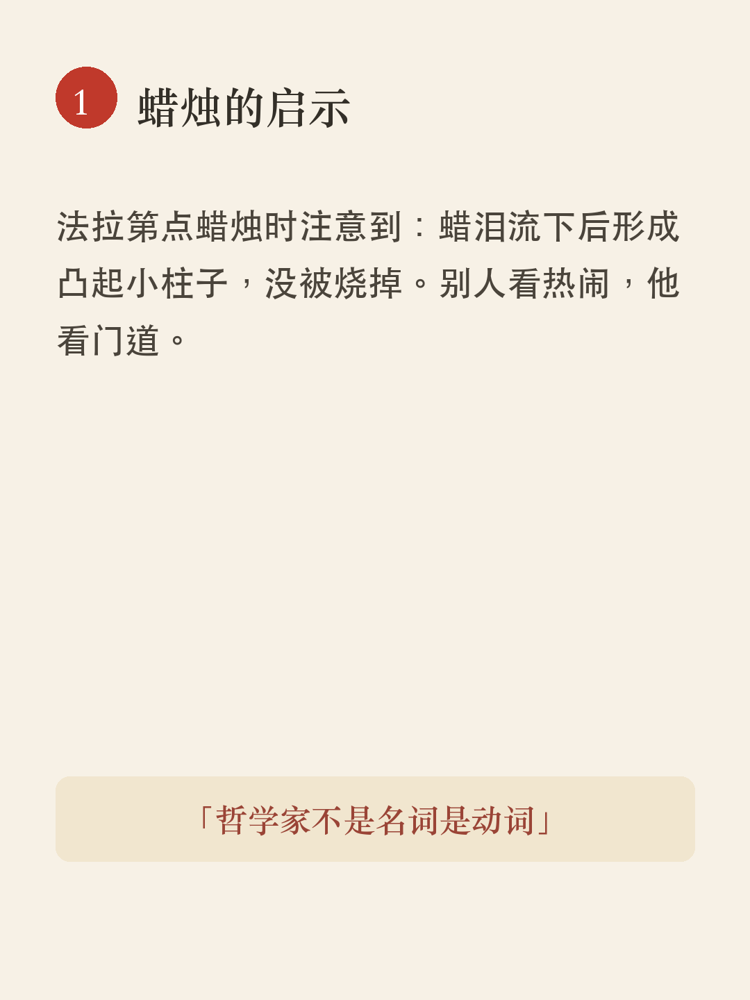
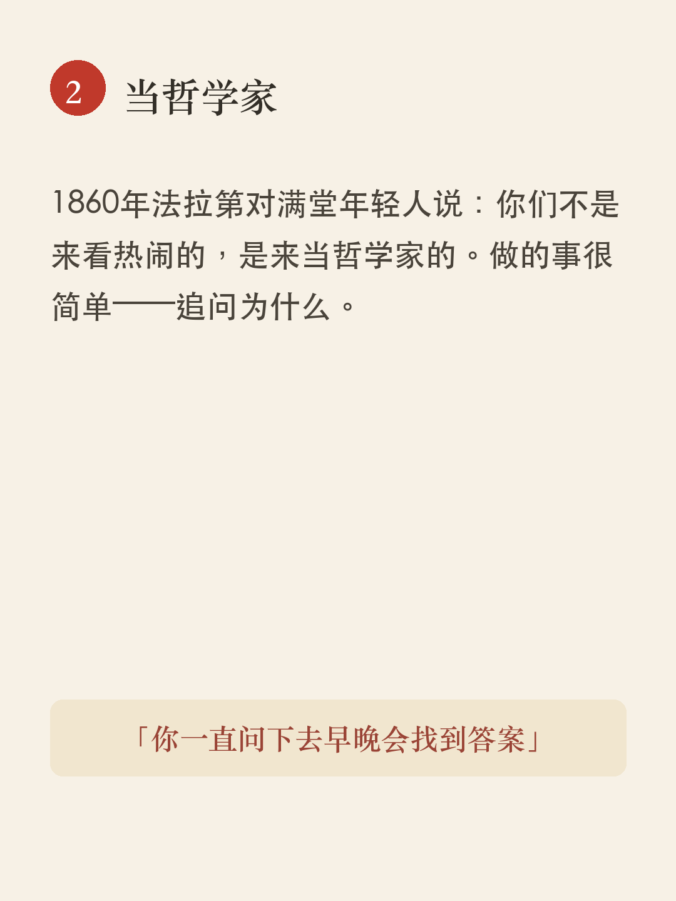
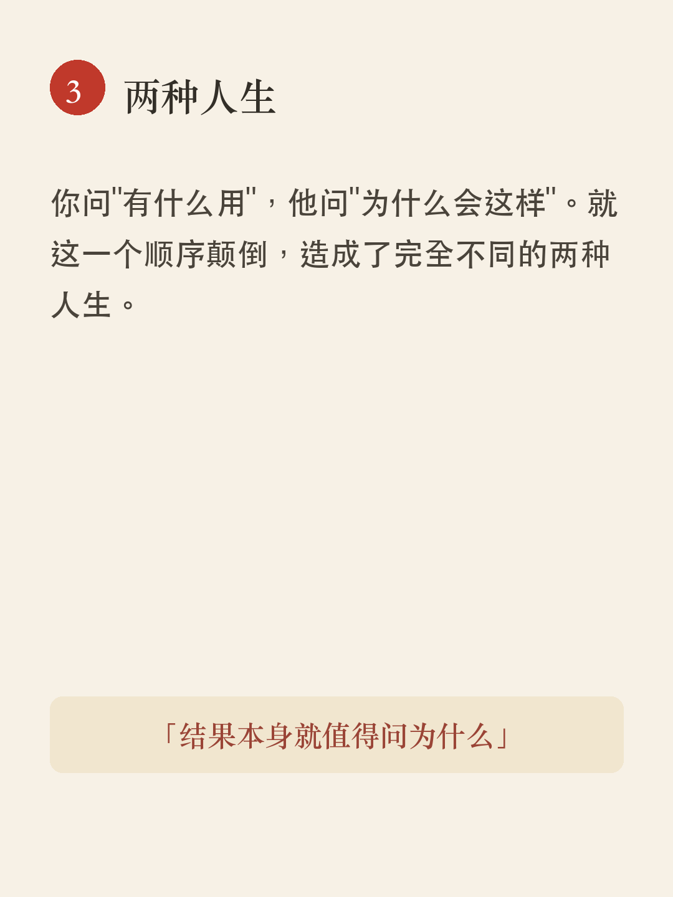
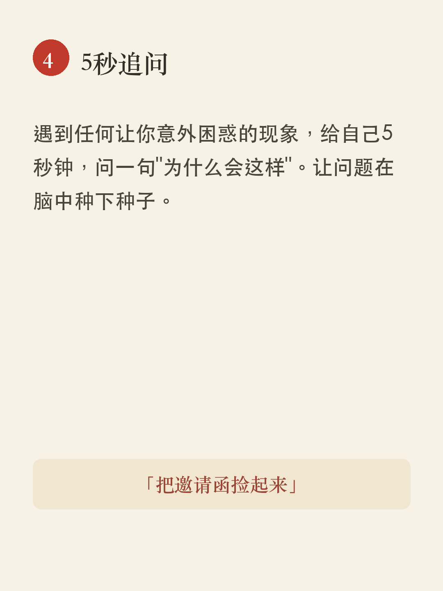
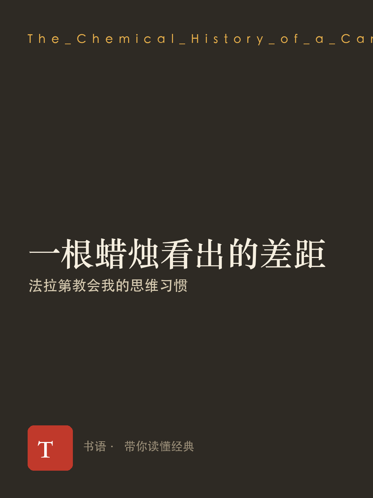
📄 配文·钩子（不剧透）
法拉第用一根蜡烛讲了一堂改变无数人命运的课。他观察我们忽略的现象，追问他人都略过的细节。不是天赋的差距，是习惯的不同。从今天起，遇到任何结果——天亮了、推送来了、蜡烛烧了——都停5秒问一句为什么。不需要找答案，就只是种下那颗好奇的种子。法拉第相信：你一直问下去，早晚会找到答案。你愿意从今天开始，把废纸捡起来吗？口播稿全文
你有没有注意过，一根普普通通的蜡烛，燃烧的时候，边缘会流下一道蜡泪，然后那道蜡泪就会在侧面形成一个凸起的小柱子。你点蜡烛的时候看到这个了吗？还是说，你压根就没注意过蜡烛烧成了什么样，点着了就完了？
法拉第注意了。而且他不只是看到了，他还停下来问自己：为什么这道蜡泪没有像别的地方一样被烧掉，反而形成了一根小柱子留在那里？
他真的去想了。他的答案是：因为那道蜡泪流下来之后，它比周围高出来一点点。就高出来那么一点点，空气流通就更好，冷却就更有效，于是它反而能更好地抵抗火焰的热量。结果就是，别的地方都烧凹陷了，就它立在那儿，像一根小柱子。
这个观察本身已经够有意思了。但法拉第没有停在"哦原来是这样"。他在自己的书里专门把这件事拿出来，当作一个教学的时刻。他说了一句话，你要认真听——
"我们来这里，是要当哲学家的。每当你看到一个结果，尤其是新的结果，你应该说：'原因是什么？为什么会发生？'你这样一直问下去，早晚会找到答案。"
这是法拉第1860年在皇家学院做圣诞讲座的时候，对着满堂的年轻人说的。那是一群孩子，没有高深背景，甚至可能连蜡烛的化学成分都不清楚。但法拉第对他们说：你们不是来看热闹的，你们是来当哲学家的。哲学家不是名词，是动词，是你们此刻就要开始做的事。做的事很简单——追问为什么。
注意他的用词。他没有说"遇到不懂的问题要问为什么"。他说的是"遇到一个结果要问为什么"。结果是什么？是已经发生了的事。你不需要遇到难题，不需要遇到考试，不需要遇到论文——你遇到一根蜡烛燃烧，这件事已经是一个结果了。这个结果本身就值得你问一句"为什么"。
这个习惯的威力，被绝大多数人严重低估了。
你今天早上醒来，看到窗外天亮了。天亮了——这是一个结果。大多数人的反应是什么？没有反应，接着刷手机。但如果你问一句"为什么天会亮"，你可能就开始了解地球自转，了解晨昏线，了解大气层对阳光的散射——这些都是你自己想要去弄清楚的，不是谁逼你的。
你今天收到了一个APP的推送，你看到了。大多数人的反应是什么？看完就划走了。但如果你问一句"为什么这条内容会在这个时候推送给我"，你可能就开始理解推荐算法的逻辑，理解内容平台的运作机制——这些都会改变你使用这些工具的方式。
我们和法拉第的差距，不在天赋，不在学历，不在智商。就差在有没有"追问为什么"这个习惯上。大多数人看到新事物，问的第一个问题是"这有什么用"或者"这是什么意思"。法拉第看到新事物，问的第一个问题是"为什么会这样"。就这一个顺序的颠倒，造成了完全不同的两种人生。
我不是说你看完这个视频就能变成法拉第。那不现实。但你可以从今天开始，训练一个小动作——我管它叫"5秒追问"。
遇到任何让你稍微有点意外、稍微有点困惑、稍微有点想不通的现象，你就给自己5秒钟。5秒钟之内，问自己一句："为什么会这样？"
不需要你现在就去找答案。不需要你拿出手机开始查资料。就只是问一句。让这个问题在你脑子里种下一个种子。然后有一天，你可能正好看到一本书，或者遇到一个人，或者经历一件事，那个种子突然就被激活了，答案自己就冒出来了。
法拉第说："你这样一直问下去，早晚会找到答案。"——"you will in the course of time find out the reason"。
他相信这件事，是因为他一辈子就是这么过来的。一根蜡烛能讲成一堂改变无数人命运的圣诞讲座，不是靠他懂多少化学，靠的是他看见蜡烛的时候，从来不让自己轻易走过去。
你现在看到的每一个普通现象，都是一张邀请函，邀请你停下来问一句"为什么"。问题是，大多数人把邀请函当成了废纸。
你愿意从今天开始，把废纸捡起来吗？
74旧版映照scene公版✓ 判官过审蜡烛凭什么比钻石更亮
🎬 你知道吗，你花大价钱买的钻石，晚上其实是在蹭蜡烛的光。
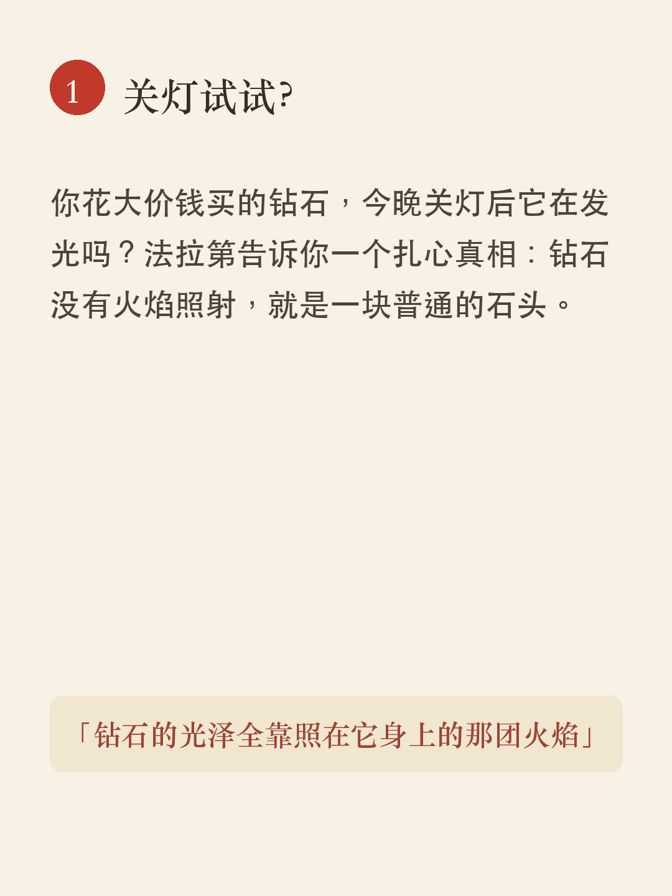
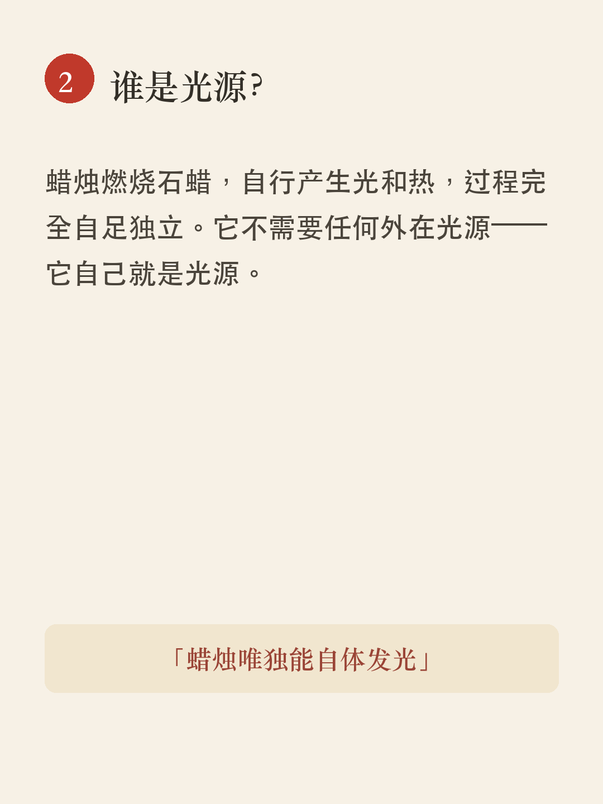
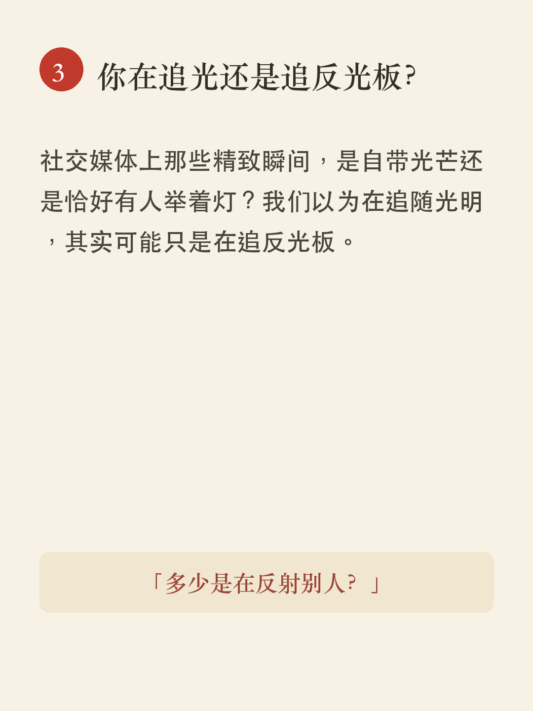
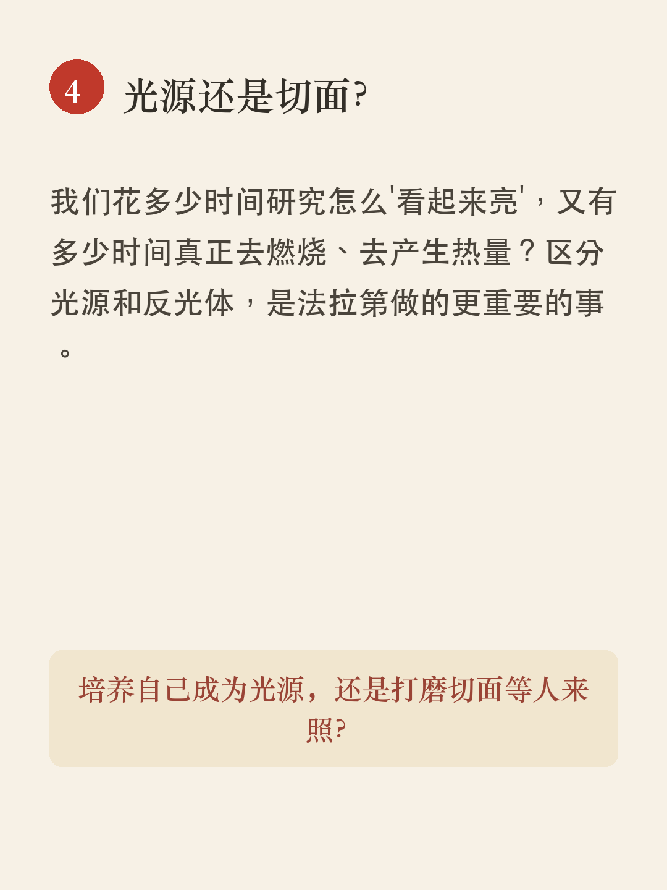
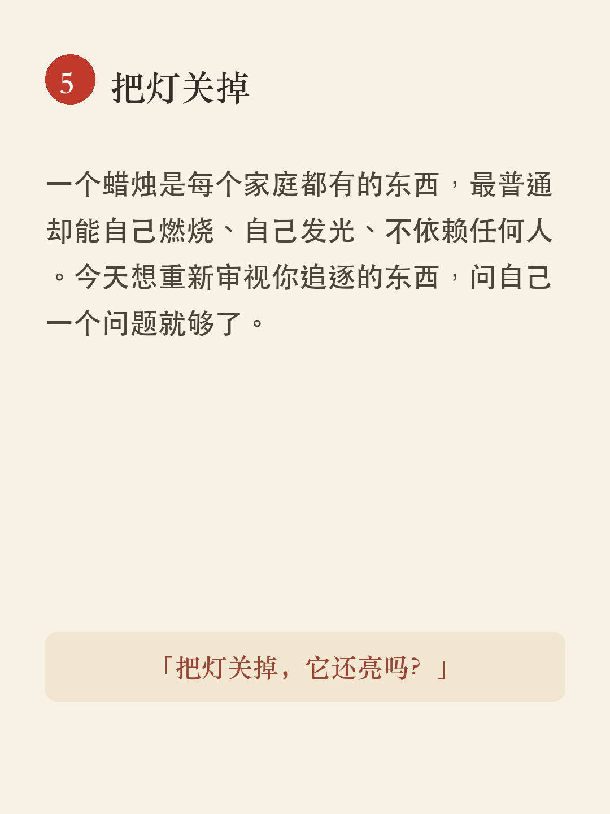
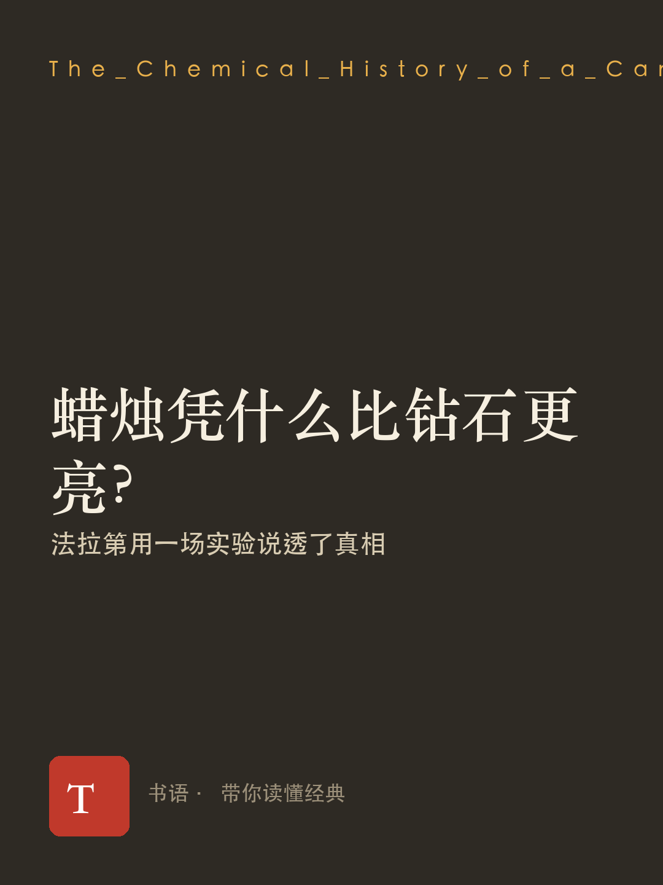
📄 配文·钩子（不剧透）
法拉第在《蜡烛的化学史》里讲过一个扎心的实验：钻石在夜晚的光泽，全靠照在它身上的那团火焰。它不是发光体，它只是在反射。🔥
但蜡烛不一样。它自己燃烧、自己发光，不依赖任何人。
你有没有想过：我们每天追逐的那些闪闪发光的东西，有多少是真正的光源，有多少只是在反射别人？那些精心打光的人生时刻，是自带光芒，还是恰好有人举着灯？
我们花多少时间研究怎么让自己「看起来亮」，又有多少时间真正去燃烧、去产生热量？
想重新审视你追逐的东西，就问自己一个问题：把灯关掉，它还亮吗？💡口播稿全文
你花大价钱买的那颗钻石，今晚关灯之后，它在发光吗？
大多数人可能会说：当然在发光啊，钻石不是最闪亮的吗？
但法拉第会告诉你一个你可能不愿意接受的事实。他在《蜡烛的化学史》第一讲里明确指出：夜晚钻石的光泽要靠火焰照射，提出了钻石与火焰截然不同的发光机理。他说："What diamond can shine like flame?" 什么样的钻石能像火焰一样发光？紧接着他给出了一个让所有迷恋钻石的人听了都会愣住的答案——"It owes its lustre at night-time to the very flame shining upon it." 钻石在夜晚的光泽，其实全靠照在它身上的那团火焰。
请注意他的用词，是"owe"，是"归功于"，是"依赖"。钻石在夜晚的光泽依赖照在它上的火焰；它本身不是发光体。晚上你走进一间点了蜡烛的屋子，钻石亮起来了——那不是钻石在发光，那是烛光照在钻石的切割面上，被折射、被反射，闪得你睁不开眼。你以为你在欣赏钻石的璀璨，实际上你看到的是烛火在钻石上打了一场光影的弹珠。
法拉第紧接着说了一句更有分量的话："The candle alone shines by itself, and for itself, or for those who have arranged the materials." 蜡烛唯独能自体发光，并为其自身或为布置好材料的人而发光。这和钻石完全不同。蜡烛不需要任何外在的光源来照亮它，它自己就是光源。火焰燃烧石蜡，产生光和热，这整个过程是自足的、独立的。
你想想，这不就是我们每天在经历的事情吗？
我们追逐的那些闪闪发光的东西，有多少是真正的光源，有多少只是在反射别人？社交媒体上那些精致的生活照片，那些被精心打光的人生时刻——它们是自带光芒，还是恰好有人举着灯？我们以为自己在追随光明，其实可能只是在追着光后面那块反光板跑。
法拉第用通俗演示澄清了一个易被忽略的常识：钻石不是自发光体，烛焰才是光源。他通过电光投影观察火焰与周围上升气流的影子，指出火焰下部有较暗区——那里还没有开始剧烈的燃烧反应。他还用玻璃管从火焰中部引出可燃蒸汽，说明内层为蒸汽、外层与空气接触处更亮、更完全燃烧。真正的光发生在外层，那是燃料和空气相遇的地方，是化学变化最剧烈的地方。
这让我想到一个问题：我们是在培养自己成为光源，还是在打磨自己的切面，等着别人来照？我们花多少时间研究怎么让自己"看起来亮"，又有多少时间真正去燃烧、去产生热量？
当然，我不是说钻石没有价值。法拉第也没有贬低钻石的意思，他只是做了一件更重要的事——帮我们分清楚什么是真正的光源，什么是反射者。而一个蜡烛，在那个分发的时代，是每个家庭都有的东西，是最普通的光源，但它自己燃烧、自己发光、不依赖任何人照亮。
今天如果你想重新审视自己追逐的东西是不是真的值得，问自己一个问题就够了：把灯关掉，它还亮吗？
74旧版人物scene公版✓ 判官过审法拉第：我就是个'大孩子'
🎬 19世纪最伟大的科学家之一，对着孩子们说：我是个大孩子。
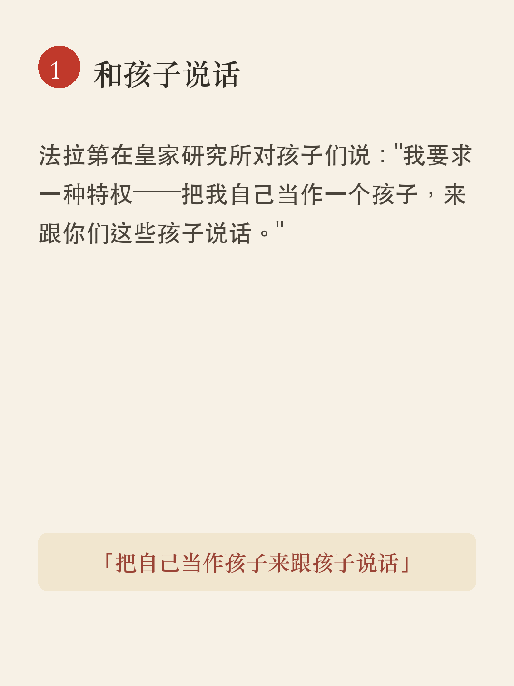
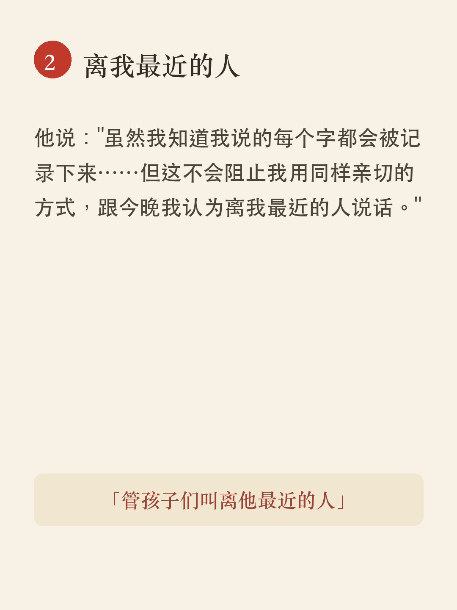
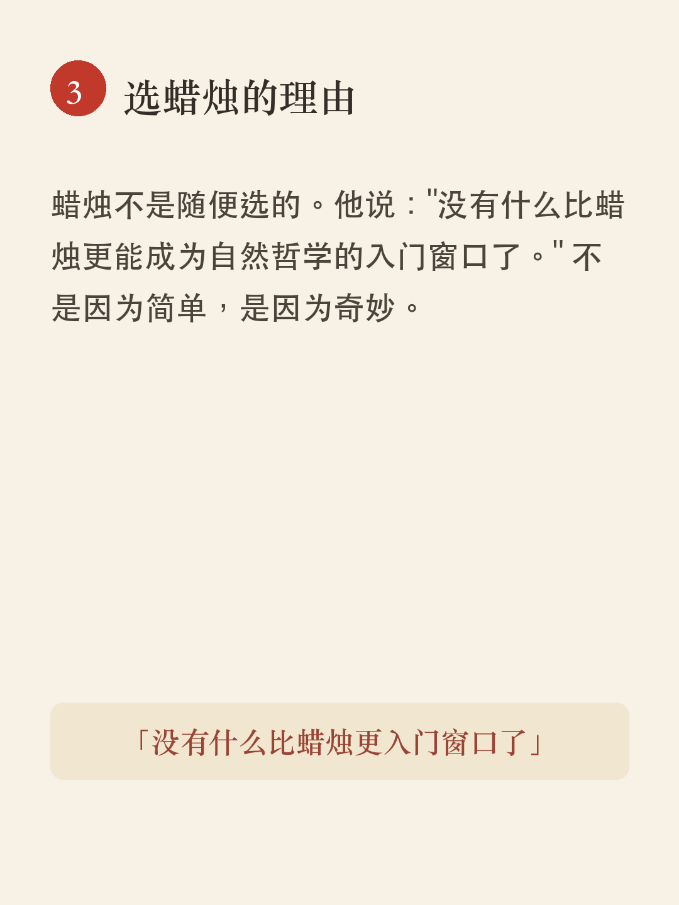
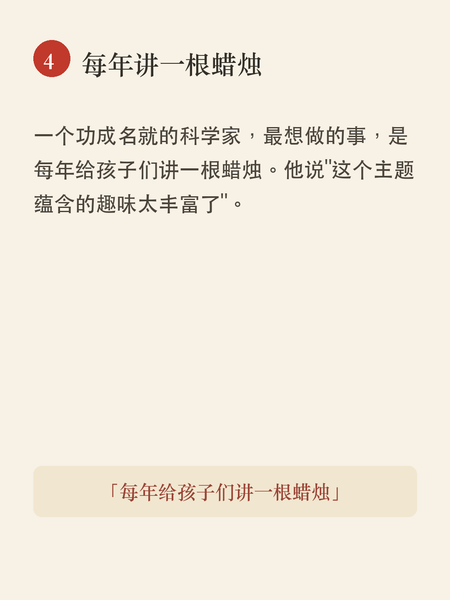
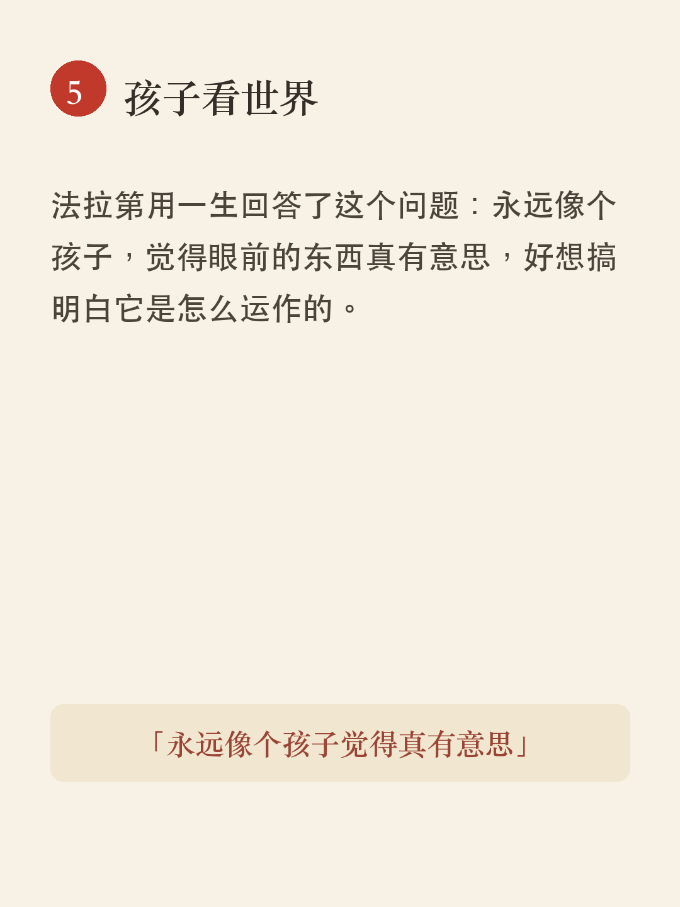
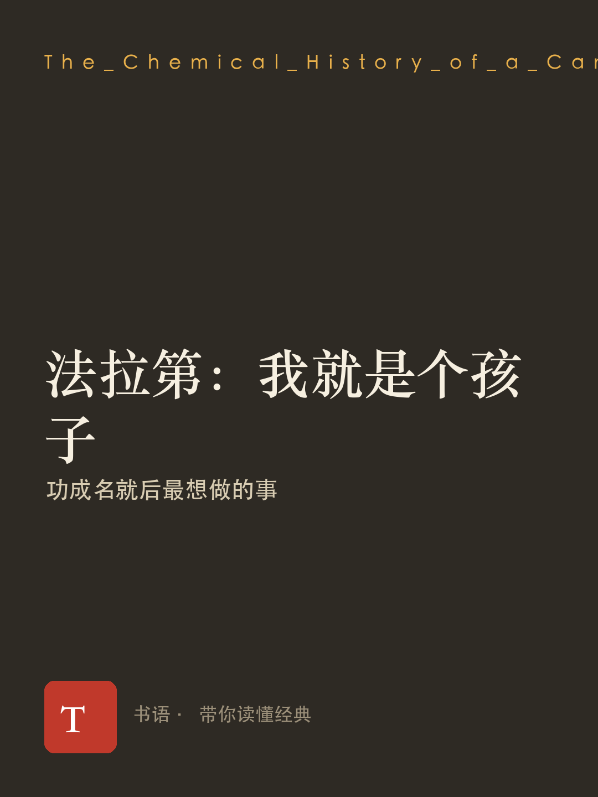
📄 配文·钩子（不剧透）
19世纪最伟大的科学家法拉第，在皇家研究所对着一群孩子做讲座，开口第一句话竟是："我要把自己当作一个孩子，跟你们说话。" 他管这些孩子叫"离我最近的人"。功成名就之后，他最想做的事，是每年给孩子们讲一根蜡烛。这就是最好的学习状态——永远保持孩子看世界的眼光。真正的科学家从来不觉得自己"已经学会了"。口播稿全文
你们知道吗，19世纪最伟大的科学家之一迈克尔·法拉第，在英国皇家研究所面向青少年观众的系列讲座中，在这次讲座开头不久说了这句话——
"I claim the privilege of speaking to juveniles as a juvenile myself."
他还补充说："I have done so on former occasions—and, if you please, I shall do so again."
翻译过来就是：我要求一种特权——把我自己当作一个孩子，来跟你们这些孩子说话。
这话是法拉第亲口说的，写在《蜡烛的化学史》这本书里。书中收录了他在皇家研究所面向青少年的讲座稿。面前坐着一群孩子——他上来第一件事，是把自己降到跟孩子们平起平坐的位置。
他说："我以前也这么干过，要是你们不介意的话，我以后还要继续这么做。"
更绝的是后面这句："虽然我知道我说的每一个字都会被记录下来公之于众，但这不会阻止我用同样熟悉、亲切的方式，跟今晚我认为离我最近的人说话。"
你们听出来了吗？他管那些孩子叫"离我最近的人"。
法拉第在讲座开头讲了一个很诚恳的道理——蜡烛这个题目，他不是随便选的。他说："没有什么比蜡烛更能成为自然哲学的入门窗口了。宇宙间任何一条法则，都逃不出蜡烛燃烧涉及的这些现象。"
但他选择蜡烛，不是因为它简单，而是因为它奇妙。从一根木头怎么烧成天然蜡烛，到抹香鲸的鲸腊如何制成sperm蜡烛、牛脂又如何被化学处理制成硬脂蜡烛；从火焰为什么往上窜，到烛芯怎么把蜡油吸上去——每一个细节都是一个"为什么"。
法拉第没有说"你们来听我教你们科学"。他的姿态是：咱们都是孩子，我带你们一起看这个有趣的东西。
这就是他还在讲儿童科普的原因。他在书里说，如果让他自己选，他愿意把这个讲座差不多每年都讲一遍——因为"这个主题蕴含的趣味太丰富了，它通向哲学各个分支的出口太多了"。
一个功成名就的科学家，最想做的事，是每年给孩子们讲一根蜡烛。
所以你问我，什么是最好的学习状态？
法拉第用他的一生回答了这个问题：就是这种——永远像个孩子一样，觉得眼前的东西真有意思，好想搞明白它是怎么运作的。
真正的科学家从来不觉得自己"已经学会了"。他们只是保持了孩子看世界的眼光。
72旧版洞见thread公版✓ 判官过审一根蜡烛里藏着整个宇宙的规律
🎬 法拉第说：研究一根蜡烛，你就能理解整个宇宙的法则。
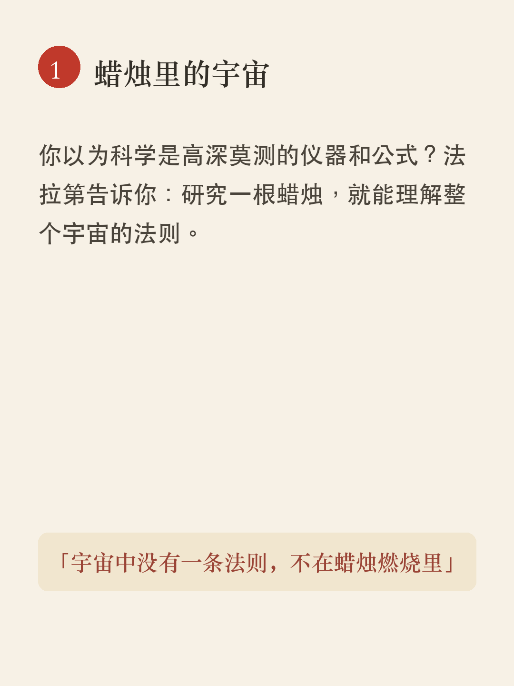
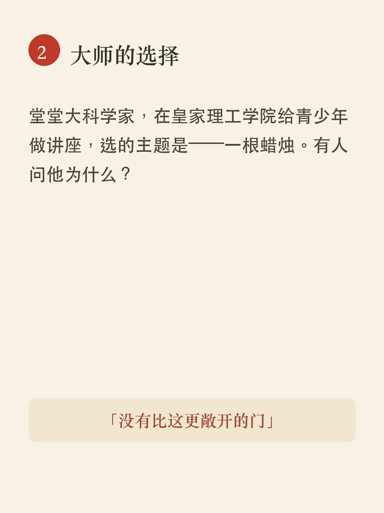
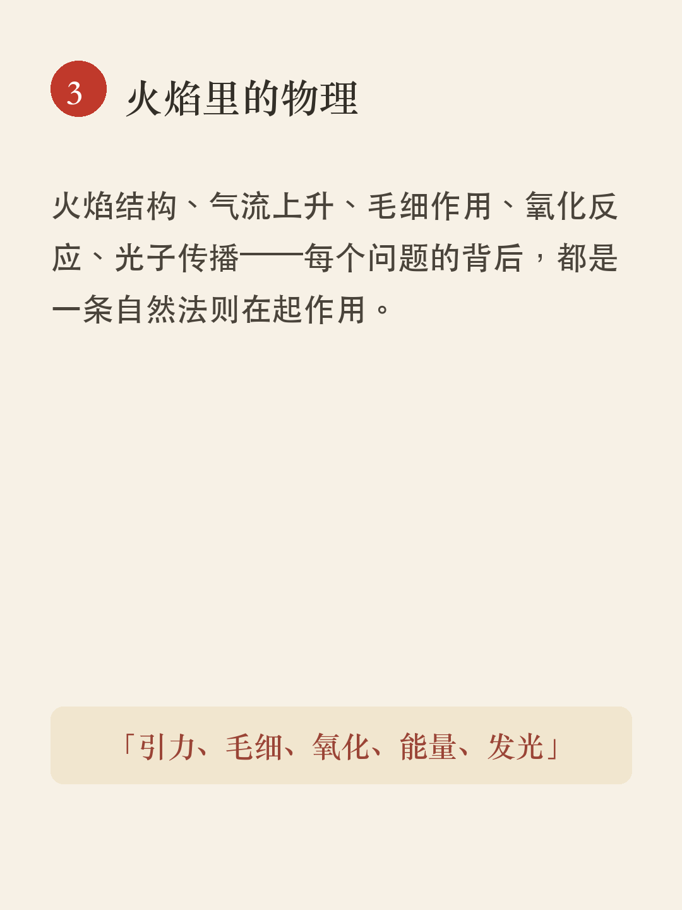
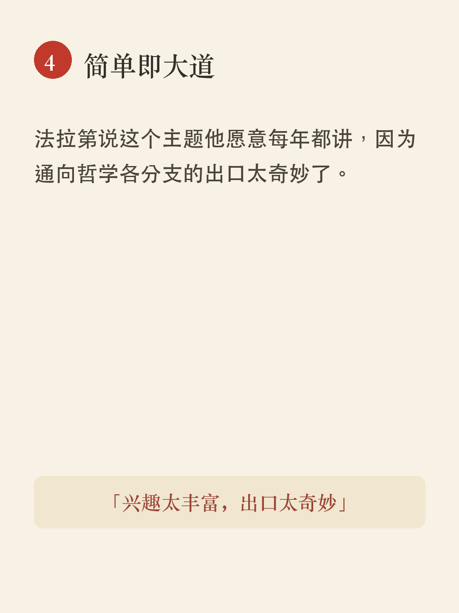
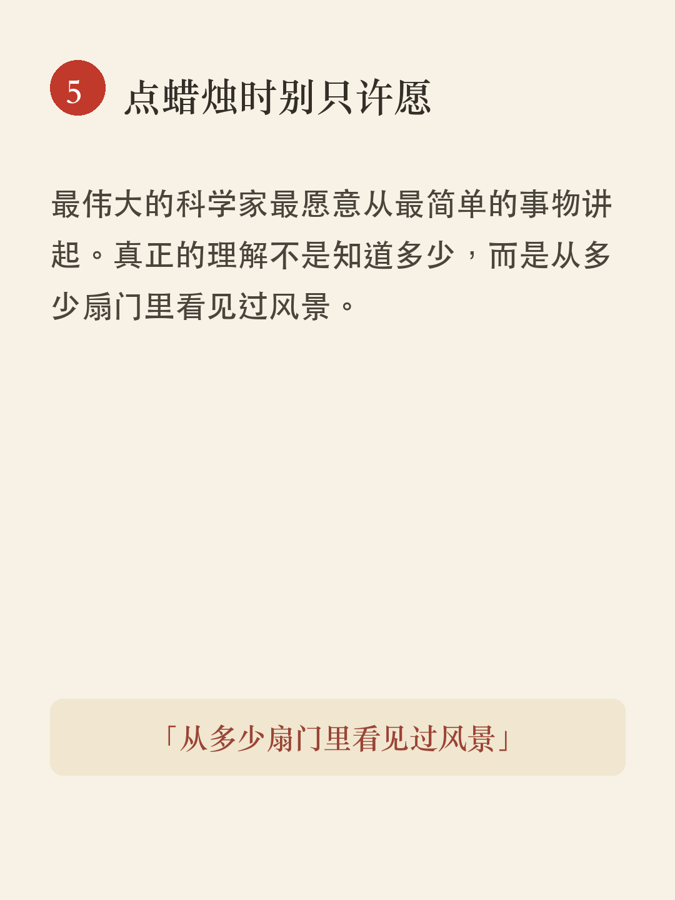
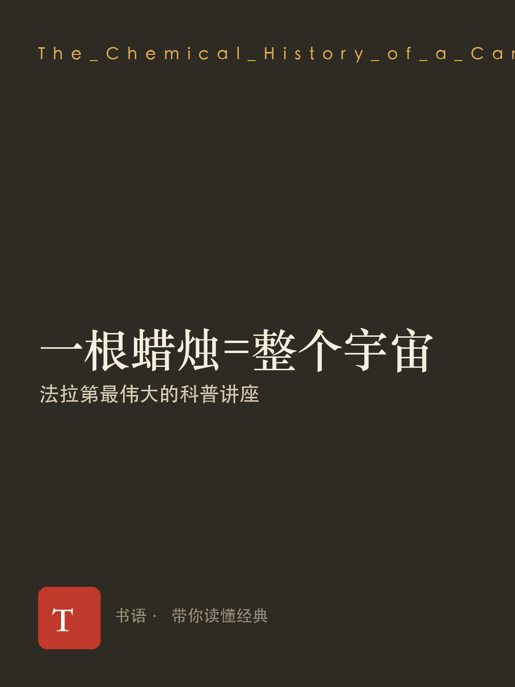
📄 配文·钩子（不剧透）
法拉第在皇家理工学院给青少年做讲座，选的主题是一根蜡烛。堂堂大科学家为什么？他说：宇宙中没有一条法则，不在蜡烛燃烧的这些现象里发挥作用。没有比研究蜡烛物理现象更好的门，可以走进自然哲学的殿堂。火焰结构、气流、毛细作用、氧化反应、光和热——每一个问题背后都是一条自然法则。最伟大的科学家最愿意从最简单的事物讲起，因为真正的理解不是知道多少，而是从多少扇门里看见过风景。下次点蜡烛，别只顾着许愿，那团小小的火焰，是整个宇宙法则开的一扇门。口播稿全文
你以为科学是实验室里那些高深莫测的仪器，是化学方程式和数学公式，是普通人够不着的东西？
法拉第告诉你：错。
研究一根蜡烛，你就能理解整个宇宙的法则。
这是法拉第在皇家理工学院给青少年做讲座时的开场白。他选了一个再普通不过的东西——蜡烛——作为整个系列讲座的主题。有人问他：你堂堂一个大科学家，为什么不选更新的、更前沿的话题？
法拉第的回答就印在这本书的第一页，我念给你听：
"There is not a law under which any part of this universe is governed which does not come into play, and is touched upon in these phenomena."
翻译过来就是：宇宙中没有一条法则，不在蜡烛燃烧的这些现象里发挥作用。
他还说："There is no better, there is no more open door by which you can enter into the study of natural philosophy, than by considering the physical phenomena of a candle."
没有比研究蜡烛的物理现象更好的门了，没有比这更敞开的门，可以让你走进自然哲学的殿堂。
你想想，一根蜡烛燃烧，涉及的是什么？火焰的结构、气流怎么上升、燃料怎么通过毛细作用被吸上去、燃烧产生的产物是什么、光和热怎么传播——这每一个问题，背后都是一条自然法则在起作用。引力让气流往上走，毛细作用把融化的蜡吸到火焰那里，氧化反应释放能量，光子从炽热的碳粒子里跑出来照亮你的房间。
法拉第说，这个主题他愿意每年都讲一遍，因为"so abundant is the interest that attaches itself to the subject, so wonderful are the varieties of outlet which it offers into the various departments of philosophy"——这个主题附带的兴趣太丰富了，它通向哲学各个分支的出口太奇妙了。
所以你看，最伟大的科学家，反而最愿意从最简单的事物讲起。因为他们知道，真正的理解不是知道多少，而是从多少扇门里看见过风景。
下次你点蜡烛的时候，别只顾着许愿。你看见的那团小小的火焰，是整个宇宙法则在你面前开的一扇门。
68旧版映照scene公版✓ 判官过审你缺的不是能力，是你没烧到那个温度
🎬 一根蜡烛告诉你：不是你不发光，是你还没被热到白炽。
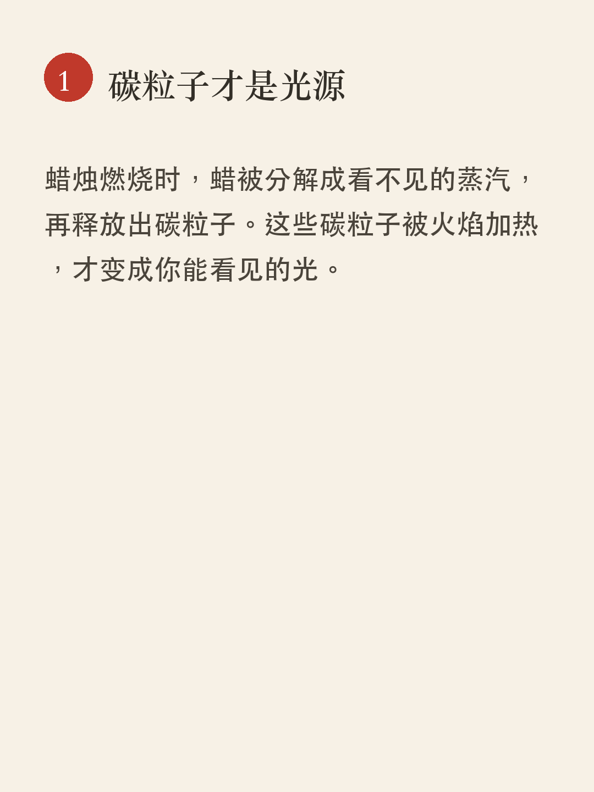
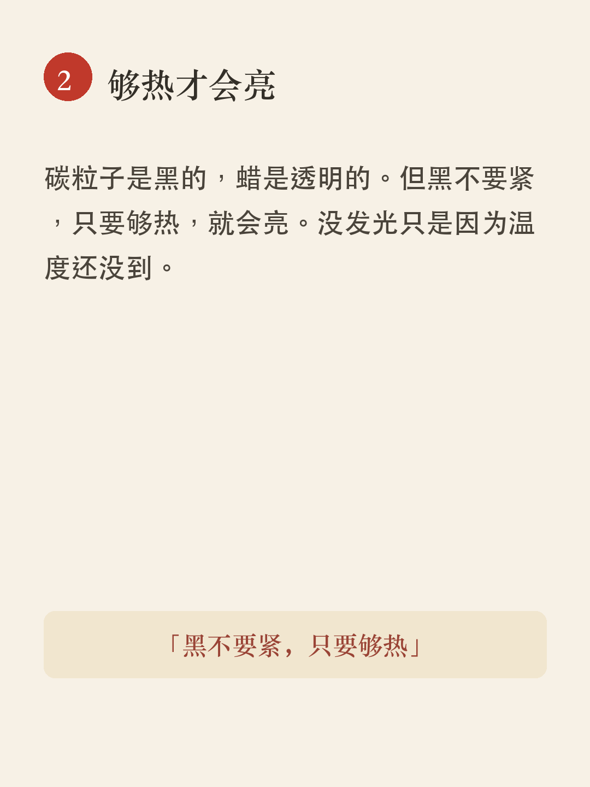
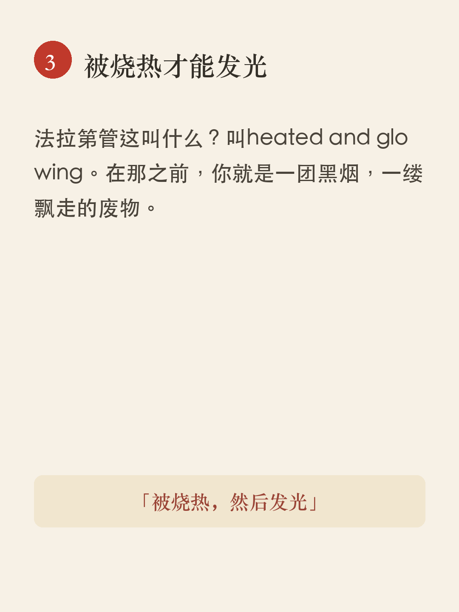
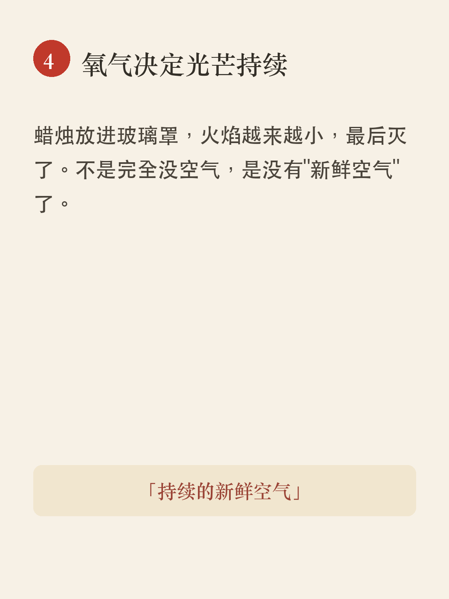
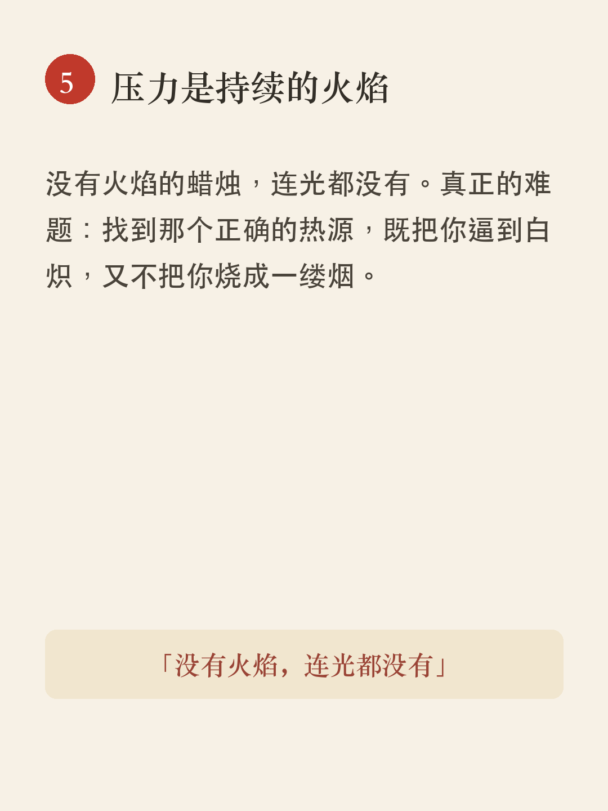
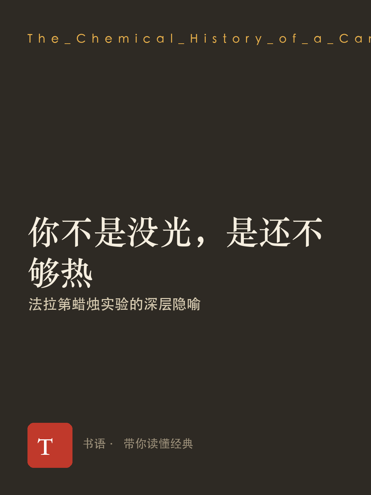
📄 配文·钩子（不剧透）
你有没有想过，为什么明明有能力，却一直表现平平？
我在法拉第的《蜡烛的化学史》里找到了答案。蜡烛发光，不是蜡本身在亮，而是被热释放的碳粒子被烧到了白炽。
问题来了：你身上的才华、潜力——它一直都在。但它还没被烧到那个温度。
更扎心的是：温度够了不够。你还需要持续的、新鲜的空气，才能一直亮着。
压力从来不是坏事。真正难的是找到那个正确的热源，既逼你发光，又不把你烧没。
你可能不是没才华。你只是还没被持续地、正确地燃烧。口播稿全文
你有没有想过，为什么有些人明明有能力，却一直表现平平？为什么有些事你明明做得到，却总是差那么一口气？
我前两天读法拉第的《蜡烛的化学史》，看到一段话，突然想通了。法拉第说，蜡烛燃烧的时候，蜡被热分解，变成看不见的蒸汽，然后热又把这些蒸汽拆开，释放出碳粒子。这些碳粒子被火焰加热，越烧越亮，最后变成你能看见的光。
注意，是碳粒子在发光，不是蜡本身在发光。蜡是透明的，碳粒子是黑的。但黑不要紧，只要够热，就会亮。
法拉第管这叫什么？叫heated and glowing。被烧热，然后发光。
问题来了：碳粒子凭什么发光？因为它被烧到了白炽的温度。在那之前呢？它是黑烟。是一团飘走的废物。是没人看见的东西。
这不就是人生吗？你身上的某些东西——也许是才华，也许是潜力，也许是某种你知道自己有但一直没发挥出来的能力——它一直都在。但它还没被烧到那个温度。
法拉第的蜡烛实验，不是什么科普童话，是一个关于潜力的隐喻。你不是没有光，你是被加热的程度还不够。
但这里有个更深的点，可能很多人没注意到。温度够了就够了吗？法拉第还做过一个实验。他把一根蜡烛放进玻璃罩里。一开始烧得好好的，火焰又大又稳定。然后慢慢变小，越来越小，最后灭了。
你猜为什么？因为空气不够了。不是完全没空气——玻璃罩里还有空气——但不是"新鲜空气"了。蜡烛需要持续的、新鲜的空气才能保持那个温度、那个亮度。
这像不像人生里那些"差一点"的时刻？你被逼了一把，压力来了，热情来了，你开始发光。但然后呢？如果没有持续的氧气，没有新鲜的支持和挑战，那个光就会慢慢暗下去。
所以法拉第的蜡烛实验，说的不光是"你要被烧到那个温度才发光"。它说的是：你需要被持续地、正确地燃烧，才能一直亮着。
这大概是关于"压力"最诚实的一个比喻了。我们总以为压力是坏事，但我们忘了一根没有火焰的蜡烛，连光都没有。
你可能不是没才华。你只是还没被加热到那个温度。而真正的难题是：找到那个正确的热源，既能把你的碳粒子逼到白炽，又不会把你烧成一缕烟。
66旧版映照scene公版✓ 判官过审你需要新鲜空气，不是一般空气
🎬 法拉第说：燃烧需要的不是空气，是新鲜的空气。
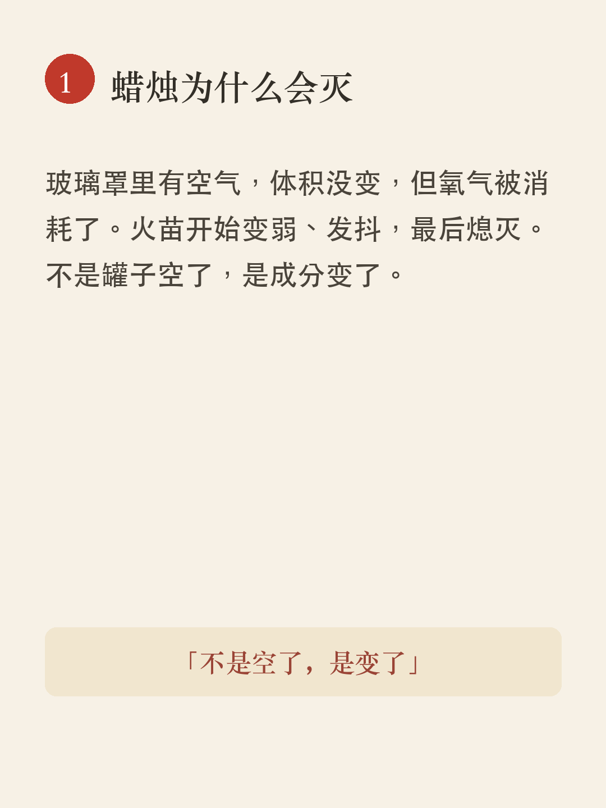
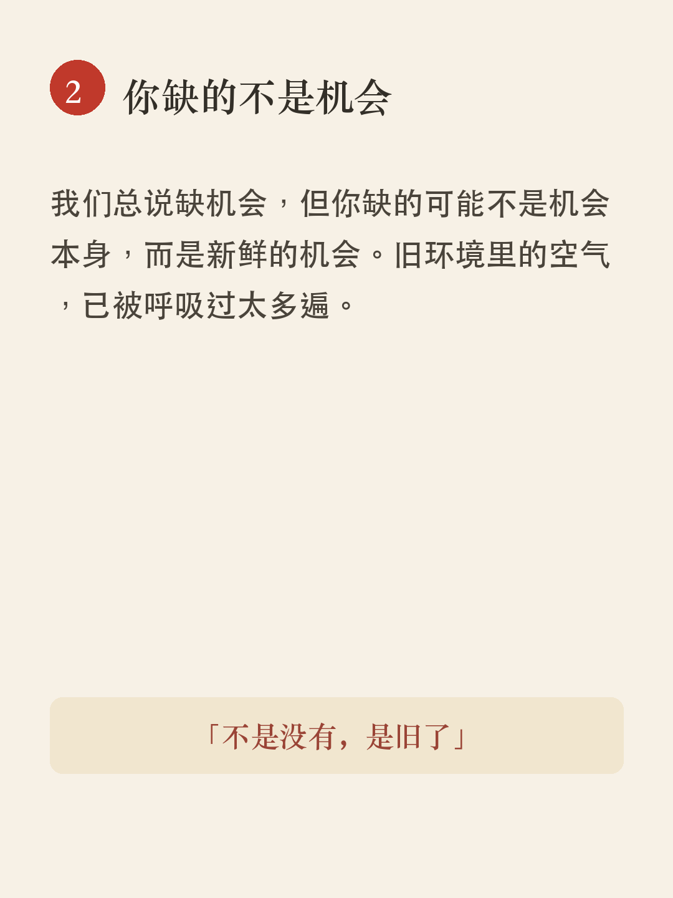
📄 配文·钩子（不剧透）
蜡烛熄灭不是因为罐子空了，而是氧气被消耗光了，成分变了。
我们的人生也是这样——不是没有机会，是机会已经「用过」了；不是没有空气，是吸进去的都是废气。
工作有，人脉有，但你被困在一个看不见的玻璃罩里。老板的话术两年前有道理，现在像复读。你以为还有空气，其实火苗已经在发抖了。
所以别再往罐子里加废气，去开窗，去换气。哪怕现在什么都有，也要问一句：我呼吸的，还是能让我燃烧的空气吗？口播稿全文
你知道蜡烛为什么会灭吗？
法拉第在演讲中展示了蜡烛在玻璃罩下的燃烧实验。蜡烛一开始烧得好好的，你看着它，以为它能一直烧下去。但慢慢地，火苗开始变弱，开始发抖，最后熄灭了。
这时候，玻璃罩里还有空气吗？有。体积看起来和之前一样，但成分已经改变了——氧气被消耗，二氧化碳和水汽增加，蜡烛就是灭了。
法拉第强调，燃烧不仅需要空气，更需要新鲜空气。罐子里确实有空气，但这空气已经被用过一次了——氧气被消耗掉了，比例改变了，空气因成分变化而不再适于维持燃烧。
你听出来了吗？这不是化学课，这是人生课。
我们每天说"我要机会"——但你有没有想过，你缺的可能不是机会，而是新鲜的机会？
我见过太多人困在一种窒息感里：工作也有的，人脉也有的，资源也有的，但就是越来越喘不上气。为什么？因为那些东西已经被呼吸过太多遍了。老板说的那套话术，两年前听着有道理，现在听着像复读；圈子里的消息永远是那几个人嚼剩下的八卦；你每天做的事和昨天一样，昨天做的事和上周一样。你以为你还有空气，但你已经被封在一个看不见的玻璃罩里了。
蜡烛熄灭，不是因为罐子空了，而是因为里面的氧气下降到不足以维持燃烧的水平，却没有新的进来。空气的成分被改变了，新鲜的和废气混在一起，比例越来越不对。
所以真正的问题不是"我有没有空气"，而是"我吸进去的，还是不是能让人燃烧的空气"。
你想让蜡烛继续亮着，答案不是往罐子里加更多的废气，而是打开盖子，让外面的新鲜空气流进来。人的状态也是这样——有时候你不一定需要更多的任务、更大的野心，你需要的是一次真正的换气。
去见一个你从没聊过的人，去一个你没去过的领域，去读一本跟你现在做的一切都没关系但能让你"啊"一下的书。哪怕你现在的环境看起来什么都有，也要问自己一句：我呼吸的这些空气，是新鲜的吗？
你今天，该开窗了。